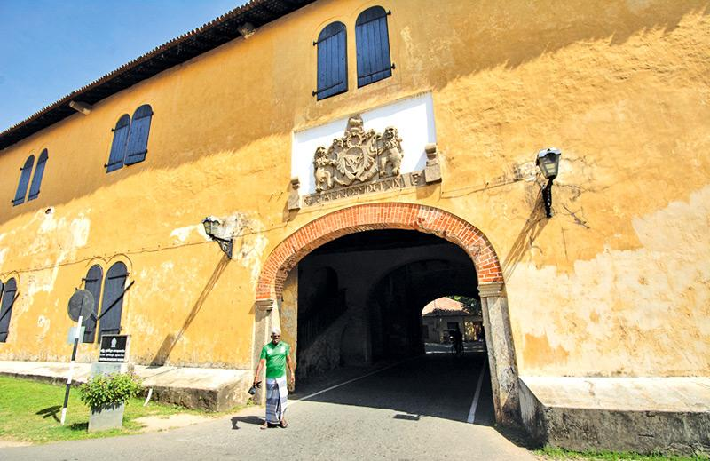

Old Gate

The Galle Old Gate, also known as the Main Gate, is a historic landmark located in the heart of Galle Fort, Sri Lanka. As the main
entrance to the fort, it has witnessed centuries of history and cultural exchange. The gate serves as a grand entrance to the fortification,
welcoming visitors into a world of colonial charm and architectural beauty.
The Galle Old Gate's situation at the entrance of Galle Fort positions it as a significant point of arrival for travelers exploring the area. The fort itself has a storied past, with Portuguese, Dutch, and British influences evident in its architecture and layout. The gate's construction is attributed to the Dutch, who fortified the fort during their colonial rule in the 17th century.
The value of the Galle Old Gate lies in its historical significance and architectural grandeur. Its solid structure, adorned with intricate carvings and stonework, showcases the craftsmanship of the era. The gate's design reflects the Dutch influence, with its distinctive pediment and arched doorway. Walking through the gate is like stepping back in time, transporting visitors to a bygone era.
Beyond its historical and architectural value, the Galle Old Gate holds cultural significance for the local community. It serves as a symbol of Galle's rich heritage and the resilience of its people. The gate has withstood the test of time, surviving natural disasters and witnessing the transformation of the city around it.
Visitors to the Galle Old Gate can explore the fort's narrow streets, lined with colonial-era buildings, quaint cafes, and boutique shops. The gate also serves as a meeting point for locals and tourists alike, as they gather to witness cultural events, street performances, and vibrant festivals that take place within the fort.
The Galle Old Gate stands as a testament to the city's vibrant past and its continuous evolution. It invites visitors to step into a world of history and explore the cultural tapestry of Galle Fort. Walking through the gate is not only a physical transition but also a journey into the soul of the city, where stories of the past intertwine with the vibrant present.
The Galle Old Gate's situation at the entrance of Galle Fort positions it as a significant point of arrival for travelers exploring the area. The fort itself has a storied past, with Portuguese, Dutch, and British influences evident in its architecture and layout. The gate's construction is attributed to the Dutch, who fortified the fort during their colonial rule in the 17th century.
The value of the Galle Old Gate lies in its historical significance and architectural grandeur. Its solid structure, adorned with intricate carvings and stonework, showcases the craftsmanship of the era. The gate's design reflects the Dutch influence, with its distinctive pediment and arched doorway. Walking through the gate is like stepping back in time, transporting visitors to a bygone era.
Beyond its historical and architectural value, the Galle Old Gate holds cultural significance for the local community. It serves as a symbol of Galle's rich heritage and the resilience of its people. The gate has withstood the test of time, surviving natural disasters and witnessing the transformation of the city around it.
Visitors to the Galle Old Gate can explore the fort's narrow streets, lined with colonial-era buildings, quaint cafes, and boutique shops. The gate also serves as a meeting point for locals and tourists alike, as they gather to witness cultural events, street performances, and vibrant festivals that take place within the fort.
The Galle Old Gate stands as a testament to the city's vibrant past and its continuous evolution. It invites visitors to step into a world of history and explore the cultural tapestry of Galle Fort. Walking through the gate is not only a physical transition but also a journey into the soul of the city, where stories of the past intertwine with the vibrant present.